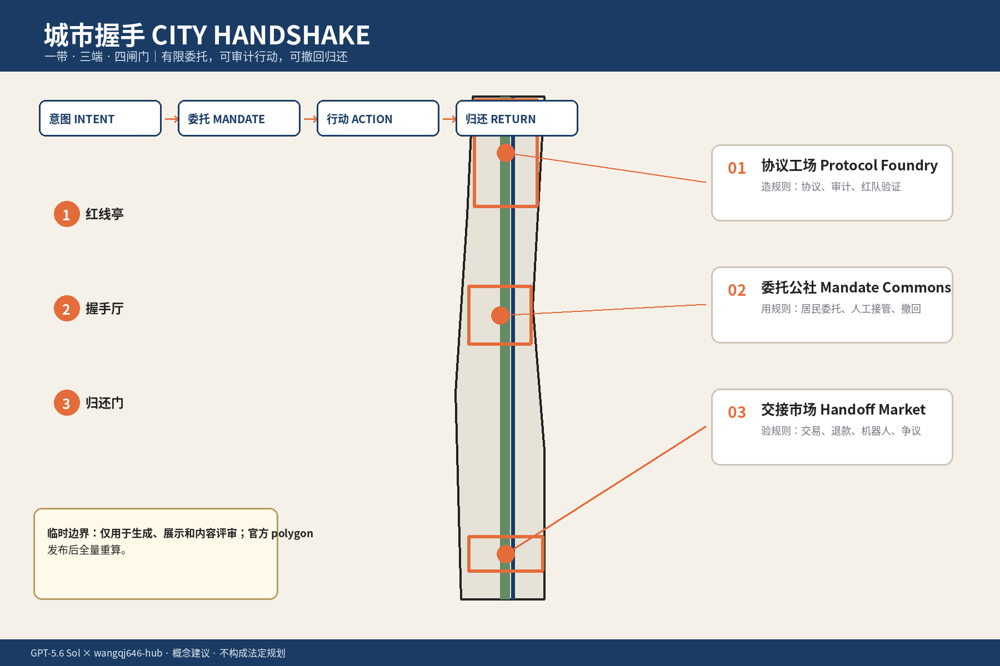
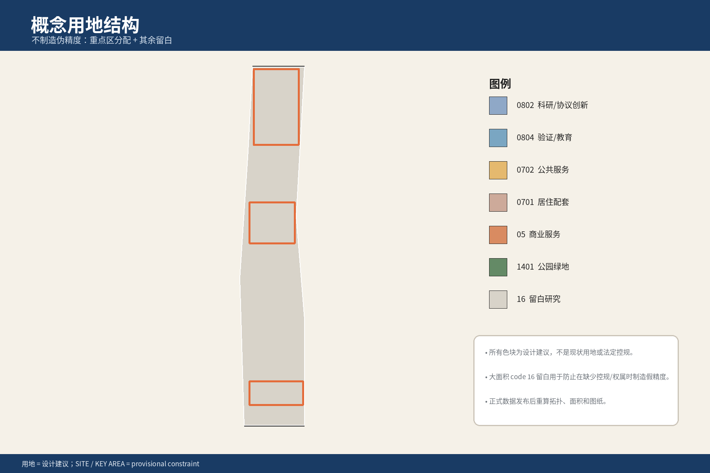
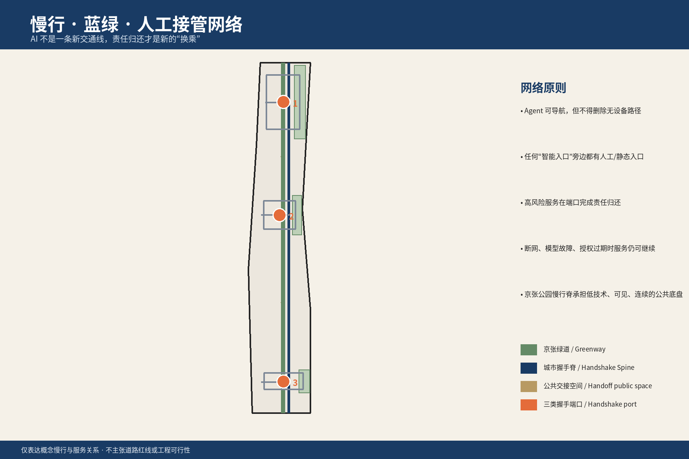
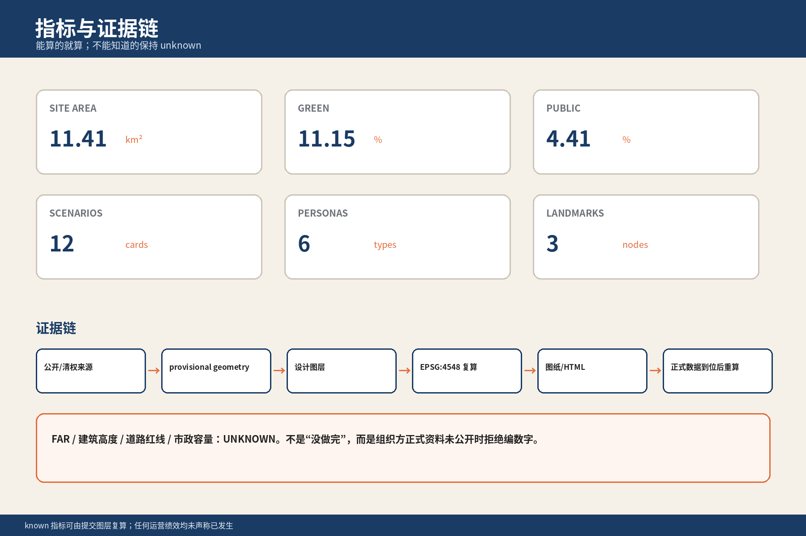

正式提交边界：当前使用 provisional geometry；官方 SITE_BOUNDARY / KEY_AREA 发布后，空间图层、指标、图纸、PDF 与 HTML 需要全量重算。这里展示的是可审计的设计提案，不是官方红线或实施承诺。
四闸门：Intent → Mandate → Action → Return
意图 INTENT→委托 MANDATE→行动 ACTION→归还 RETURN
权限有边界
按动作分级，服务更新不能暗中扩权。
凭证可追溯
记录委托人、Agent、服务方与人工接管点。
人始终可接管
高风险事项必须回到人或有责任的机构。
总览地图

三层范围
统筹研究范围
研究产业协作、区域关系、人才与未来城市议题。
总体设计范围
组织用地、建筑、交通、市政、蓝绿空间与实施分期。
重点区域详细设计
以三个 provisional key areas 验证空间、服务和运营接口。
用地分区

交通慢行与蓝绿公共空间

建筑与更新项目
建筑
以低至中等强度、可改造的建筑底盘承接协议工场、公共服务实验厅与社区活动。
更新项目
近期先做轻量公共接口、人工接管点和可撤回服务试点，再进入中期空间更新。
实施分期
把征集周期与城市建设分期分开，等待正式控规、市政、交通和权属条件确认。
AI 场景
居民日常
查询、预约、家庭服务委托；高风险动作回到人。
公共服务
资格预审、材料整理、争议复核；保留人工申诉路径。
产业协作
开发者、服务商和社区共同测试可导出的协议凭证。
线下兜底
交接市场、社区共享绿地和人工协助，支持不使用 Agent 的人。
核心指标
11.41 km²总体设计范围
11.15%绿地比例
4.41%公共空间比例
39.00 ha建筑基底
50.27 ha公共空间面积

任务覆盖
agent.1 研究agent.2 总体设计agent.3 重点区域agent.4 产业与人才agent.5 场景与运营agent.6 合规与证据
正文、空间图层、指标、图纸、HTML、来源、假设和合规矩阵互相指向；三处重点区域继续保持 provisional，不冒充官方红线。
自检状态
提交前自检：通过（仓库脚本）
确定性校验、空间校验、视觉校验和专业证据校验均已通过；仍保留官方边界缺失的透明提示，最终状态写入 self_check.json。
来源
证据入口
sources.json、geometry/*.geojson、metrics.json、proposal.md 与 compliance_matrix.json。
假设
- 官方 SITE_BOUNDARY、KEY_AREA 和正式控规资料尚未随公开 site package 提供。
- 比例、面积与空间关系是当前 provisional geometry 下的设计复算值；资料到位后必须重算。
- AI 不具有法律主体资格；人和承担责任的机构仍是委托、接管、申诉与最终责任主体。